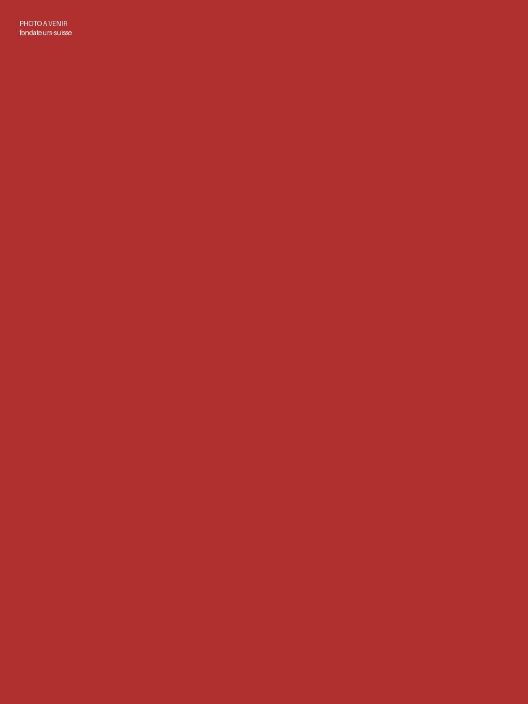

Depuis 2017
Notre Histoire
Un profond amour entre deux pays, la Suisse et la Côte d'Ivoire, devenu une force au service des plus vulnérables.
Depuis 2017
Une histoire d'amour devenue une œuvre de solidarité
Depuis 2017, la Fondation Giv'in Love agit auprès des populations vulnérables de Côte d'Ivoire. En 2022, elle est officiellement reconnue par les autorités ivoiriennes.
Fruit de l'engagement du couple Decurey, cette fondation est née d'un profond amour entre deux pays : la Suisse 🇨🇭 et la Côte d'Ivoire 🇨🇮.
Sa mission est de promouvoir la solidarité, l'éducation, la santé, l'autonomisation des femmes, la protection de l'enfance et le développement durable.
Les fondateurs
Le couple Decurey, un amour devenu fondation
À l'origine de Giv'in Love, il y a bien plus qu'un projet : il y a l'histoire du couple Decurey, fondateur de la Fondation. Entre la Suisse et la Côte d'Ivoire, leur union incarne la rencontre de deux cultures qui se sont choisies.
Sous la présidence de Madame Dobré Decurey, cette histoire d'amour s'est muée en engagement : semer, famille après famille, les sillons d'un monde meilleur — fidèlement à la devise de la Fondation.

Notre parcours
Les grandes étapes de la Fondation
-
2017
Les premiers pas
Le couple Decurey lance ses premières actions solidaires auprès des familles vulnérables de Côte d'Ivoire : distributions, soutien scolaire et accompagnement de proximité.
-
2017 – 2021
L'engagement grandit
Les programmes se structurent autour de l'éducation, de la santé et de l'autonomisation des femmes. Des centaines de familles sont accompagnées.
-
2022
Reconnaissance officielle
La Fondation Giv'in Love est officiellement reconnue par les autorités ivoiriennes : une étape décisive qui renforce sa légitimité et son impact.
-
Aujourd'hui
Plusieurs projets en développement
Maternités de proximité, foyers de jeunes filles, coopératives agricoles, plantations d'arbres : la Fondation prépare l'avenir avec ambition et transparence.

Nos fondements
Les droits humains au cœur de notre action
Conformément aux principes des Nations Unies du 10 décembre 1948 relatifs aux droits fondamentaux de tous les êtres humains, la Fondation œuvre pour construire une société plus juste et plus équilibrée.
- La dignité et l’égalité de chaque être humain
- L’accès à l’éducation et à la santé pour tous
- La protection de l’enfance et des plus vulnérables
- Une société plus juste et plus équilibrée

Écrivons la suite de cette histoire, ensemble
Chaque soutien, chaque geste, chaque don nourrit cette aventure humaine entre la Suisse et la Côte d'Ivoire.